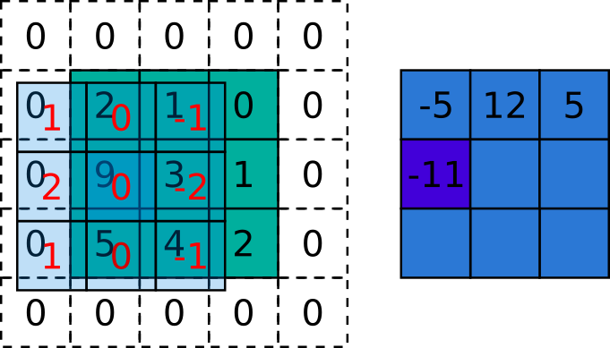

Capítulo 5 Filtros Digitais
Filtros digitais representam um conjunto de ferramentas poderosas para realizar operações em imagens. Diferente das operações de ponto que operam sobre um único pixel, as operações utilizando filtros levam em consideração os pixels próximos ao pixel que atualmente está em modificação. Isso nos permite realizar alterações muito mais complexas do que as realizadas anteriormente. Como exemplos disso podemos considerar a operação sharpen (aguçamento) e blur (suavização), que podem ser observados na Figura 5.1 (a) e Figura 5.1 (b), respectivamente.
Figura 5.1: Imagem de ônibus com filtro de aguçamento e de suavização[8, p. 98]
5.1 Convolução
Convolução é uma operação muito utilizada em PDI tendo suas origens na matemática, onde é definida como uma operação realizada entre duas funções e que resulta numa terceira. Em outras palavras, a convolução recebe dois sinais como entrada e gera um sinal como saída. No caso de PDI, podemos imaginar os sinais de entrada como sendo a nossa imagem original e o kernel do filtro, e a nossa saída como sendo a imagem filtrada.
Quando dizemos kernel, estamos nos referindo a uma função ou, no caso de PDI, a uma matriz que é aplicada a nossa imagem usando a convolução que irá produzir outra imagem como saída. Na Tabela 5.1, temos exemplos de alguns tipos de kernels que podem ser utilizados na convolução e seus respectivos resultados. Além dos efeitos mais comuns como o de desfoque (blur), podemos utilizar kernels que extraiam informações mais complexas das imagens, como os detectores de borda que serão discutidos mais a fundo nos próximos tópicos.
| Operação | Kernel | Resultado |
|---|---|---|
| Identidade (Imagem Original) | \[\begin{bmatrix} 0 & 0 & 0\\ 0 & 1 & 0\\ 0 & 0 & 0 \end{bmatrix}\] |  |
| Detecção de borda | \[\begin{bmatrix} -1 & -1 & -1\\ -1 & 8 & -1\\ -1 & -1 & -1 \end{bmatrix}\] |  |
| Média (box blur) | \[\frac{1}{9}\begin{bmatrix} 1 & 1 & 1\\ 1 & 1 & 1\\ 1 & 1 & 1 \end{bmatrix}\] |  |
| Gaussian blur | \[\frac{1}{16}\begin{bmatrix} 1 & 2 & 1\\ 2 & 4 & 2\\ 1 & 2 & 1 \end{bmatrix}\] | |
Em porcessamento de sinais a operação de convolução geralmente é representada pelo síbolo \(*\) e pode ser descrita, em poucas palavras, como uma soma de produtos entre um ponto do kernel e um ponto correspondente da imagem. Essa correspondência é encontrada fazendo um deslizamento sobre a imagem de entrada. A Figura 5.2 representa de maneira visual a convolução em um cenário de uma dimensão, através do sinal de entrada (signal) e o kernel. Podemos ainda perceber que o kernel está rotacionado em 180º, isso se deve a definição de convolução.
![Convolução em uma dimensão [14]](imagens/05-filtros/convolutionGif.png)
Figura 5.2: Convolução em uma dimensão [14]
Algo interessante que podemos observar na imagem 5.2 é que nosso sinal de entrada é quase totalmente 0 e contém um único ponto 1. Isso faz com que nosso resultado seja uma cópia do kernel. A partir disso, conseguimos imaginar o por que de termos como resultado a própria imagem quando aplicado um kernel identidade, como mostrado na tabela 5.1.
Antes de irmos mais adiante no assunto, é importante esclarecermos alguns conceitos para que não se tornem confusos. Existe outra operação matemática extremamente parecida com a convolução chamada correlação, sendo que ela também realiza a soma de multiplicações com a diferença de que ela não rotaciona o kernel.
Para entendermos bem essa diferença, podemos observar a figura 5.3, onde temos um exemplo de correlação e convolução sendo executados em um espaço unidimensional. Temos uma função \(f\) e um filtro \(w\) na figura 5.3 (a) e (b) respectivamente. Na sequência, em (b) e (j), temos as funções e os filtros prontos para iniciar a correlação e a convolução. Nas etapas (c) e (k), podemos ver o preenchimento com zeros. Isso ocorre porque há partes das funções que não se sobrepõem. Dessa forma, permite que \(w\) percorra todos os pixels de \(f\). Após isso, é realizado o primeiro passo da correlação e convolução, onde podemos observar que o resultado é 0 já que \(w\) está sobreposto por somente zeros. Logo, a soma da multiplicação de cada item de \(w\) por \(f\) será zero. Deslocamos então o filtro \(w\) em uma unidade a direita, onde o resultado novamente será 0. O primeiro resultado não nulo se dará no terceiro deslocamento, sendo 8 para a correlação e \(1\) para a convolução. Temos o resultado de ambas operações em (g) e (o) e o resultado recortado em (h) e (p), recorte este que remove os zeros até o tamanho ficar igual ao da \(f\) inicial.
![Ilustração de correlação e convolução unidimensional [2, p. 96]](imagens/05-filtros/correlationNConvolution1D.png)
Figura 5.3: Ilustração de correlação e convolução unidimensional [2, p. 96]
Vamos extender agora essas duas operações à aplicação em duas dimensões. Uma representação disso pode ser vista na Figura 5.4, onde temos novamente o kernel \(w\) e a função \(f\). Percebe-se outra vez o efeito de se aplicar o kernel em uma imagem com apenas o número 1 no meio, nos dois casos temos como saída a cópia do kernel aplicado, com a diferença que na correlação o kernel aparece rotacionado no resultado. Assim, nota-se que se pré-rotacionarmos o filtro e realizarmos a correlação teremos no final uma convolução.
Já que a correlação e convolução são iguais, é preciso saber qual delas utilizar. Segundo Gonzalez, [2, p. 98], isso é uma questão de preferência e qualquer uma das duas operações conseguem realizar a outra com uma simples rotação do kernel. Essa questão se torna ainda menos relevante quando utilizamos filtros que são simétricos, pois, como antes e após a rotação temos o mesmo kernel, tanto correlação ou convolução nos darão o mesmo resultado. Já usando kernels assimétricos, temos resultados diferentes. Já, segundo Moeslund [7, p. 87], quando trabalhamos com filtros de desfoque, detectores de borda, entre outros, o processo de se aplicar o kernel é comumente chamado de convolução mesmo quando na prática se é implementada a correlação.
Figura 5.4: Ilustração de correlação e convolução bidimensional [2, p. 98]
5.1.1 Definção matemática da convolução
Vamos explorar um pouco das notações matemáticas utilizadas para representar a convolução e a correlação, assim também poderemos consolidar a idéia de que ambas são muito correlacionadas. Como dito no início desta seção, geralmente a convolução é identificada por \(*\). Já a correlação costuma ser identificada por ☆. A correlação em duas dimensões segue a seguinte equação:
\[g(x,y) = w(x,y)☆f(x,y) = \sum_{s=-a}^{a}\sum_{t=-b}^{b}\ w(s,t)f(x+s,y+t)\]
Onde \(w\) é nosso \(kernel\) e \(f\) nossa imagem. Podemos perceber que ambas são funções de duas variáveis, \(x\) e \(y\), pois estamos trabalhando em duas dimensões. Os limites dos somatórios são dados por \(a=(m-1)/2\) e \(b=(n-1)/2\) e o que essa função faz é andar em cada posição da imagem, ou seja, \((x,y)\), e substituir o píxel atual pela soma de produtos da multiplicação dos valores do \(kernel\) pelos valores dos píxels da imagem. Já a convolução tem uma equação bem similar, sendo diferente apenas pelos sinais negativos em \(f\), o que evidência a rotação do \(kernel\). Podemos notar que os sinais inversos estão em \(f\) e não em \(w\). Segundo Gonzalez[2, p. 98], isso é usado para fins de simplicidade de notação e não alteram o resultado.
\[g(x,y) = w(x,y)*f(x,y) = \sum_{s=-a}^{a}\sum_{t=-b}^{b}\ w(s,t)f(x-s,y-t)\].
Uma das melhores maneiras de entender bem as equações é ver um exemplo prático. Veremos isso a seguir, onde temos um exemplo passo-a-passo de correlação:
\[ \text{w}\text{*f}\left(0,0\right)\text{=}\sum_{s}^{}\sum_{t}^{}\text{w}\left(s,t\right)\text{f}\left(0+s,0+t\right)\,\text{=}\,\\ \text{+w}\left(-1,-1\right)\text{f}\left(-1,-1\right)\text{+w}\left(-1,0\right)\text{f}\left(-1,0\right)\text{+w}\left(-1,1\right)\text{f}\left(-1,1\right)\\ \text{+w}\left(0,-1\right)\text{f}\left(0,-1\right)\text{+w}\left(0,0\right)\text{f}\left(0,0\right)\text{+w}\left(0,1\right)\text{f}\left(0,1\right)\\ \text{+w}\left(1,-1\right)\text{f}\left(1,-1\right)\text{+w}\left(0,1\right)\text{f}\left(0,-1\right)\text{+w}\left(1,1\right)\text{f}\left(-1,-1\right)\\ =\,1\cdot0+0\cdot0+\left(-1\right)\cdot0\\ +2\cdot0+0\cdot2+\left(-2\right)\cdot1\\ +1\cdot0+0\cdot9+\left(-1\right)\cdot3\\ =0\,-2-3\,=\,-5 \]
 \[
\text{w}\text{*f}\left(0,1\right)\text{=}\sum_{s}^{}\sum_{t}^{}\text{w}\left(s,t\right)\text{f}\left(0+s,1+t\right)\,\text{=}\,\\
\text{+w}\left(-1,-1\right)\text{f}\left(-1,0\right)\text{+w}\left(-1,0\right)\text{f}\left(-1,1\right)\text{+w}\left(-1,1\right)\text{f}\left(-1,2\right)\\
\text{+w}\left(0,-1\right)\text{f}\left(0,0\right)\text{+w}\left(0,0\right)\text{f}\left(0,1\right)\text{+w}\left(0,1\right)\text{f}\left(0,2\right)\\
\text{+w}\left(1,-1\right)\text{f}\left(1,0\right)\text{+w}\left(1,0\right)\text{f}\left(1,1\right)\text{+w}\left(1,1\right)\text{f}\left(1,2\right)\\
=\,1\cdot0+0\cdot0+\left(-1\right)\cdot0\\
+2\cdot2+0\cdot1+\left(-2\right)\cdot0\\
+1\cdot9+0\cdot3+\left(-1\right)\cdot1\\
=0\,+4+8=\,12
\]
\[
\text{w}\text{*f}\left(0,1\right)\text{=}\sum_{s}^{}\sum_{t}^{}\text{w}\left(s,t\right)\text{f}\left(0+s,1+t\right)\,\text{=}\,\\
\text{+w}\left(-1,-1\right)\text{f}\left(-1,0\right)\text{+w}\left(-1,0\right)\text{f}\left(-1,1\right)\text{+w}\left(-1,1\right)\text{f}\left(-1,2\right)\\
\text{+w}\left(0,-1\right)\text{f}\left(0,0\right)\text{+w}\left(0,0\right)\text{f}\left(0,1\right)\text{+w}\left(0,1\right)\text{f}\left(0,2\right)\\
\text{+w}\left(1,-1\right)\text{f}\left(1,0\right)\text{+w}\left(1,0\right)\text{f}\left(1,1\right)\text{+w}\left(1,1\right)\text{f}\left(1,2\right)\\
=\,1\cdot0+0\cdot0+\left(-1\right)\cdot0\\
+2\cdot2+0\cdot1+\left(-2\right)\cdot0\\
+1\cdot9+0\cdot3+\left(-1\right)\cdot1\\
=0\,+4+8=\,12
\]
\[ \text{w}\text{*f}\left(0,2\right)\text{=}\sum_{s}^{}\sum_{t}^{}\text{w}\left(s,t\right)\text{f}\left(0+s,2+t\right)\,\text{=}\,\\ \text{+w}\left(-1,-1\right)\text{f}\left(-1,1\right)\text{+w}\left(-1,0\right)\text{f}\left(-1,2\right)\text{+w}\left(-1,1\right)\text{f}\left(-1,3\right)\\ \text{+w}\left(0,-1\right)\text{f}\left(0,1\right)\text{+w}\left(0,0\right)\text{f}\left(0,2\right)\text{+w}\left(0,1\right)\text{f}\left(0,3\right)\\ \text{+w}\left(1,-1\right)\text{f}\left(1,1\right)\text{+w}\left(1,0\right)\text{f}\left(1,2\right)\text{+w}\left(1,1\right)\text{f}\left(1,3\right)\\ =\,1\cdot0+0\cdot0+\left(-1\right)\cdot0\\ +2\cdot1+0\cdot0+\left(-2\right)\cdot0\\ +1\cdot3+0\cdot1+\left(-1\right)\cdot0\\ =0\,+2+3=\,5 \]
 \[ \text{w}\text{*f}\left(1,0\right)\text{=}\sum_{s}^{}\sum_{t}^{}\text{w}\left(s,t\right)\text{f}\left(1+s,0+t\right)\,\text{=}\,\\ \text{+w}\left(-1,-1\right)\text{f}\left(0,-1\right)\text{+w}\left(-1,0\right)\text{f}\left(0,0\right)\text{+w}\left(-1,1\right)\text{f}\left(0,1\right)\\ \text{+w}\left(0,-1\right)\text{f}\left(1,-1\right)\text{+w}\left(0,0\right)\text{f}\left(1,0\right)\text{+w}\left(0,1\right)\text{f}\left(1,1\right)\\ \text{+w}\left(1,-1\right)\text{f}\left(2,-1\right)\text{+w}\left(1,0\right)\text{f}\left(2,0\right)\text{+w}\left(1,1\right)\text{f}\left(2,1\right)\\ =\,1\cdot0+0\cdot2+\left(-1\right)\cdot1\\ +2\cdot0+0\cdot9+\left(-2\right)\cdot3\\ +1\cdot0+0\cdot5+\left(-1\right)\cdot4\\ =\left(-1\right)\,+\left(-6\right)+\left(-4\right)=\,-11 \]
 \[
\text{w}\text{*f}\left(1,1\right)\text{=}\sum_{s}^{}\sum_{t}^{}\text{w}\left(s,t\right)\text{f}\left(1+s,1+t\right)\,\text{=}\,\\
\text{+w}\left(-1,-1\right)\text{f}\left(0,0\right)\text{+w}\left(-1,0\right)\text{f}\left(0,1\right)\text{+w}\left(-1,1\right)\text{f}\left(0,2\right)\\
\text{+w}\left(0,-1\right)\text{f}\left(1,0\right)\text{+w}\left(0,0\right)\text{f}\left(1,1\right)\text{+w}\left(0,1\right)\text{f}\left(1,2\right)\\
\text{+w}\left(1,-1\right)\text{f}\left(2,0\right)\text{+w}\left(1,0\right)\text{f}\left(2,1\right)\text{+w}\left(1,1\right)\text{f}\left(2,2\right)\\
=\,1\cdot2+0\cdot1+\left(-1\right)\cdot0\\
+2\cdot9+0\cdot3+\left(-2\right)\cdot1\\
+1\cdot5+0\cdot4+\left(-1\right)\cdot2\\
=2\,+16+3=\,21
\]
\[
\text{w}\text{*f}\left(1,1\right)\text{=}\sum_{s}^{}\sum_{t}^{}\text{w}\left(s,t\right)\text{f}\left(1+s,1+t\right)\,\text{=}\,\\
\text{+w}\left(-1,-1\right)\text{f}\left(0,0\right)\text{+w}\left(-1,0\right)\text{f}\left(0,1\right)\text{+w}\left(-1,1\right)\text{f}\left(0,2\right)\\
\text{+w}\left(0,-1\right)\text{f}\left(1,0\right)\text{+w}\left(0,0\right)\text{f}\left(1,1\right)\text{+w}\left(0,1\right)\text{f}\left(1,2\right)\\
\text{+w}\left(1,-1\right)\text{f}\left(2,0\right)\text{+w}\left(1,0\right)\text{f}\left(2,1\right)\text{+w}\left(1,1\right)\text{f}\left(2,2\right)\\
=\,1\cdot2+0\cdot1+\left(-1\right)\cdot0\\
+2\cdot9+0\cdot3+\left(-2\right)\cdot1\\
+1\cdot5+0\cdot4+\left(-1\right)\cdot2\\
=2\,+16+3=\,21
\]
 \[
\text{w}\text{*f}\left(1,2\right)\text{=}\sum_{s}^{}\sum_{t}^{}\text{w}\left(s,t\right)\text{f}\left(1+s,2+t\right)\,\text{=}\,\\
\text{+w}\left(-1,-1\right)\text{f}\left(0,1\right)\text{+w}\left(-1,0\right)\text{f}\left(0,2\right)\text{+w}\left(-1,1\right)\text{f}\left(0,3\right)\\
\text{+w}\left(0,-1\right)\text{f}\left(1,1\right)\text{+w}\left(0,0\right)\text{f}\left(1,2\right)\text{+w}\left(0,1\right)\text{f}\left(1,3\right)\\
\text{+w}\left(1,-1\right)\text{f}\left(2,1\right)\text{+w}\left(1,0\right)\text{f}\left(2,2\right)\text{+w}\left(1,1\right)\text{f}\left(2,3\right)\\
=\,1\cdot1+0\cdot1+\left(-1\right)\cdot0\\
+2\cdot3+0\cdot1+\left(-2\right)\cdot0\\
+1\cdot4+0\cdot2+\left(-1\right)\cdot0\\
=1\,+6+4=\,11
\]
\[
\text{w}\text{*f}\left(1,2\right)\text{=}\sum_{s}^{}\sum_{t}^{}\text{w}\left(s,t\right)\text{f}\left(1+s,2+t\right)\,\text{=}\,\\
\text{+w}\left(-1,-1\right)\text{f}\left(0,1\right)\text{+w}\left(-1,0\right)\text{f}\left(0,2\right)\text{+w}\left(-1,1\right)\text{f}\left(0,3\right)\\
\text{+w}\left(0,-1\right)\text{f}\left(1,1\right)\text{+w}\left(0,0\right)\text{f}\left(1,2\right)\text{+w}\left(0,1\right)\text{f}\left(1,3\right)\\
\text{+w}\left(1,-1\right)\text{f}\left(2,1\right)\text{+w}\left(1,0\right)\text{f}\left(2,2\right)\text{+w}\left(1,1\right)\text{f}\left(2,3\right)\\
=\,1\cdot1+0\cdot1+\left(-1\right)\cdot0\\
+2\cdot3+0\cdot1+\left(-2\right)\cdot0\\
+1\cdot4+0\cdot2+\left(-1\right)\cdot0\\
=1\,+6+4=\,11
\]
\[ \text{w}\text{*f}\left(2,0\right)\text{=}\sum_{s}^{}\sum_{t}^{}\text{w}\left(s,t\right)\text{f}\left(2+s,0+t\right)\text{=}\\ \text{+w}\left(-1,-1\right)\text{f}\left(1,-1\right)\text{+w}\left(-1,0\right)\text{f}\left(1,0\right)\text{+w}\left(-1,1\right)\text{f}\left(1,1\right)\\ \text{+w}\left(0,-1\right)\text{f}\left(2,-1\right)\text{+w}\left(0,0\right)\text{f}\left(2,0\right)\text{+w}\left(0,1\right)\text{f}\left(2,1\right)\\ \text{+w}\left(1,-1\right)\text{f}\left(3,-1\right)\text{+w}\left(1,0\right)\text{f}\left(3,0\right)\text{+w}\left(1,1\right)\text{f}\left(3,1\right)\\ =\,1\cdot0+0\cdot9+\left(-1\right)\cdot3\\ +2\cdot0+0\cdot5+\left(-2\right)\cdot4\\ +1\cdot0+0\cdot0+\left(-1\right)\cdot0\\ =\left(-3\right)+\left(-8\right)+0=\,-11 \]
 \[
\text{w}\text{*f}\left(2,1\right)\text{=}\sum_{s}^{}\sum_{t}^{}\text{w}\left(s,t\right)\text{f}\left(2+s,1+t\right)\,\text{=}\,\\
\text{+w}\left(-1,-1\right)\text{f}\left(1,0\right)\text{+w}\left(-1,0\right)\text{f}\left(1,1\right)\text{+w}\left(-1,1\right)\text{f}\left(1,2\right)\\
\text{+w}\left(0,-1\right)\text{f}\left(2,0\right)\text{+w}\left(0,0\right)\text{f}\left(2,1\right)\text{+w}\left(0,1\right)\text{f}\left(2,2\right)\\
\text{+w}\left(1,-1\right)\text{f}\left(3,0\right)\text{+w}\left(1,0\right)\text{f}\left(3,1\right)\text{+w}\left(1,1\right)\text{f}\left(3,2\right)\\
=\,1\cdot9+0\cdot3+\left(-1\right)\cdot1\\
+2\cdot5+0\cdot4+\left(-2\right)\cdot2\\
+1\cdot0+0\cdot0+\left(-1\right)\cdot0\\
=8+6+0=\,14\\
\]
\[
\text{w}\text{*f}\left(2,1\right)\text{=}\sum_{s}^{}\sum_{t}^{}\text{w}\left(s,t\right)\text{f}\left(2+s,1+t\right)\,\text{=}\,\\
\text{+w}\left(-1,-1\right)\text{f}\left(1,0\right)\text{+w}\left(-1,0\right)\text{f}\left(1,1\right)\text{+w}\left(-1,1\right)\text{f}\left(1,2\right)\\
\text{+w}\left(0,-1\right)\text{f}\left(2,0\right)\text{+w}\left(0,0\right)\text{f}\left(2,1\right)\text{+w}\left(0,1\right)\text{f}\left(2,2\right)\\
\text{+w}\left(1,-1\right)\text{f}\left(3,0\right)\text{+w}\left(1,0\right)\text{f}\left(3,1\right)\text{+w}\left(1,1\right)\text{f}\left(3,2\right)\\
=\,1\cdot9+0\cdot3+\left(-1\right)\cdot1\\
+2\cdot5+0\cdot4+\left(-2\right)\cdot2\\
+1\cdot0+0\cdot0+\left(-1\right)\cdot0\\
=8+6+0=\,14\\
\]
 \[
\text{w}\text{f}\left(2,2\right)\text{=}\sum{s}^{}\sum{t}^{}\text{w}\left(s,t\right)\text{f}\left(2+s,2+t\right)\text{=}\\
\text{+w}\left(-1,-1\right)\text{f}\left(1,1\right)\text{+w}\left(-1,0\right)\text{f}\left(1,2\right)\text{+w}\left(-1,1\right)\text{f}\left(1,3\right)\\
\text{+w}\left(0,-1\right)\text{f}\left(2,1\right)\text{+w}\left(0,0\right)\text{f}\left(2,2\right)\text{+w}\left(0,1\right)\text{f}\left(2,3\right)\\
\text{+w}\left(1,-1\right)\text{f}\left(3,1\right)\text{+w}\left(1,0\right)\text{f}\left(3,2\right)\text{+w}\left(1,1\right)\text{f}\left(3,3\right)\\
=,1\cdot3+0\cdot1+\left(-1\right)\cdot0\\
+2\cdot4+0\cdot2+\left(-2\right)\cdot0\\
+1\cdot0+0\cdot0+\left(-1\right)\cdot0\\
=3+8+0=11
\]
\[
\text{w}\text{f}\left(2,2\right)\text{=}\sum{s}^{}\sum{t}^{}\text{w}\left(s,t\right)\text{f}\left(2+s,2+t\right)\text{=}\\
\text{+w}\left(-1,-1\right)\text{f}\left(1,1\right)\text{+w}\left(-1,0\right)\text{f}\left(1,2\right)\text{+w}\left(-1,1\right)\text{f}\left(1,3\right)\\
\text{+w}\left(0,-1\right)\text{f}\left(2,1\right)\text{+w}\left(0,0\right)\text{f}\left(2,2\right)\text{+w}\left(0,1\right)\text{f}\left(2,3\right)\\
\text{+w}\left(1,-1\right)\text{f}\left(3,1\right)\text{+w}\left(1,0\right)\text{f}\left(3,2\right)\text{+w}\left(1,1\right)\text{f}\left(3,3\right)\\
=,1\cdot3+0\cdot1+\left(-1\right)\cdot0\\
+2\cdot4+0\cdot2+\left(-2\right)\cdot0\\
+1\cdot0+0\cdot0+\left(-1\right)\cdot0\\
=3+8+0=11
\]
 Fonte: Autoria própria inspirado em http://www.songho.ca/dsp/convolution/convolution2d_example.html e https://arxiv.org/abs/1603.07285
Fonte: Autoria própria inspirado em http://www.songho.ca/dsp/convolution/convolution2d_example.html e https://arxiv.org/abs/1603.07285
O exemplo utiliza um \(kernel\) assimétrico. Então, os resultados da correlação e convolução são diferentes. Deixaremos isso como um exercício ao leitor, realizar a convolução para provar a diferença. O caso anterior tem também uma característica que é o complemento das bordas com 0’s para que o \(kernel\) pudesse ser aplicado sobre toda a imagem. Essa é uma das maneiras de lidar com o problema das bordas, sendo que temos essa e mais algumas possibilidades [8, p. 125] [15, p. 60]:
Preenchimento com constante (constant padding): Método onde as laterais são preenchidas com um valor constante, comumente 0.
Preenchimento com vizinho (nearest neighbor): Se realiza o preenchimento das bordas adicionais com os valores dos vizinhos mais próximos.
Reflexão (reflect): Os pixels das bordas da imagem são repetidos nas bordas adicionais.
Repetição (ou wrap): A imagem é repetida nas bordas.
Além dos métodos apresentados existem outras técnicas que podem ser utilizadas, sendo que em cada caso se escolhe a que melhor se ajusta à tarefa realizada.
O último ponto a ser explorado é a escolha do tamanho ideal do preenchimento que deve ser aplicado à imagem. De forma geral, se temos uma imagem (\(f\)), um kernel (\(w\)) e um preenchimento (\(p\)), podemos escrever a seguinte relação1:
\[saída = (f_{vertical} - w_{vertical} + p_{vertical} + 1) \times (f_{horizontal} - w_{horizontal} + p_{horizontal} + 1)\] Isso nos leva a perceber que o tamanho da imagem de saída aumenta conforme o preenchimento. Na maioria dos casos, queremos que a imagem de entrada e saída tenha o mesmo tamanho, então usamos \(p_{vertical} = k_{vertical} - 1\) e \(p_{horizontal} = k_{horizontal} - 1\). E como, geralmente, o kernel tem tamanho ímpar, utilizamos \(\frac{p_{vertical}}{2}\) e \(\frac{p_{horizontal}}{2}\).
5.2 Filtro da Média
O filtro da média é um tipo de filtro que utiliza a média dos valores dos píxels próximos ao píxel central. Como esse tipo de filtro realiza uma operação linear, ele é classificado como um filtro linear de suavização. Essa suavização se dá exatamente pelo tipo da operação utilizada, a média dos píxels vizinhos, que diminui a nitidez pela redução das transições abruptas nos níveis de intensidade. Um dos problemas que podem ocorrer é que as bordas também são mudanças abruptas, então podem ser comprometidas pelo filtro. Na figura 5.5, temos um exemplo do efeito desse filtro:
Figura 5.5: Imagem de ônibus com filtro de aguçamento e de suavização [8, p. 98]
A máscara (kernel) de um filtro de média pode ser representada por:
\[\begin{bmatrix} \frac{1}{9} & \frac{1}{9} & \frac{1}{9}\\ \frac{1}{9} & \frac{1}{9} & \frac{1}{9}\\ \frac{1}{9} & \frac{1}{9} & \frac{1}{9} \end{bmatrix} = \frac{1}{9} \begin{bmatrix} 1 & 1 & 1\\ 1 & 1 & 1\\ 1 & 1 & 1 \end{bmatrix} \] A primeira forma é a soma de todos os valores divididos por 9, o qual é o tamanho do filtro. A segunda forma, onde todos os coeficientes do kernel são 1’s, é mais eficiente computacionalmente, pois realizamos todas as somas e multiplicações antes de dividirmos. Esse tipo de filtro é muitas vezes chamado de box filter.
Figura 5.6: Imagem com diferentes tamanhos de filtro de média[2, p. 102]
Na figura 5.6, temos um exemplo onde foram aplicados filtros de média com diferentes tamanhos, 3x3(b) ; 5x5(c) ; 9x9(d) ; 15x15(e) e 35x35(f). Podemos notar que com o menor filtro, o de tamanho 3, temos um leve borramento na imagem toda, mas que as partes que tem o mesmo tamanho ou são menores que o filtro tem um borramento maior. Isso exemplifica umas das importantes aplicações dos filtros de suavização, que é a de desfocar os objetos menores e deixar os maiores em maior evidência.
![Exemplo de uso do desfoque [2, p. 103]](imagens/05-filtros/filtrosMediaHubble.png)
Figura 5.7: Exemplo de uso do desfoque [2, p. 103]
Na figura 5.7, podemos ver como o desfoque pode ser utilizado para encontrar os detalhes principais da imagem. Nesta imagem obtida a partir do telescópio Hubble foi aplicado o desfoque para diminuir a visibilidade dos objetos menores e dar maior ênfase aos da frente. E, então, foi limiarizado o resultado a fim de destacar esses objetos.
5.3 Filtro da Mediana
A mediana é um filtro não linear que utiliza como princípio a própria técnica estatística, que consiste em colocar um conjunto de dados em ordem e selecionar o valor central. Esse tipo de filtro é muito eficiente na remoção de ruído, principalmente o tipo de ruído conhecido como ruído sal e pimenta, que tem como característica a ocorrencia de pixels pretos e brancos. Como dito anteriormente, a mediana consiste em ordenar o conjunto de dados. Nesse caso os valores da vizinhança do píxel. Se usarmos uma vizinhança de tamanho 3x3, a mediana será o quinto maior valor, pois consideramos também o valor do píxel central na vizinhança ordenada.
Na figura 5.8, temos um exemplo mostrando uma imagem de raios X de uma placa de circuitos eletrônicos com a presença de ruído tipo sal e pimenta (a). A figura também apresenta as respectivas aplicações de um filtro da média (b) e do filtro da mediana (c), ambos com kernel de tamanho 3x3. Na figura, é possível perceber o quanto o filtro da mediana se sai melhor na remoção do ruído.
Figura 5.8: Remoção de ruído [2, p. 103]
5.4 Filtro Gaussiano
Filtro de Gauss é um filtro simétrico (isotrópico) usado para suavizar imagens. Ele funciona análogo a um filtro de média ponderada, mas com um padrão, isto é, dá ênfase ao pixel central da máscara (kernel) e menor ênfase a medida que os demais se distanciam do centro, seguindo um gradiente muito similar à distribuição gaussiana. O “similar” se deve somente ao fato que será necessário truncamentos, assim, havendo erros e por ser desconsiderado a constante multiplicadora, o que melhora o perfil da função para aplicação em PDI.
Função gaussiana: \[g(x) = \frac{1}{\sigma\sqrt{2\pi}}e^{-\frac{(x-\mu)^2}{2\sigma^2}}\]
Função gaussiana modificada: \[g(x) = e^{-\frac{(x-\mu)^2}{2\sigma^2}}\]
Note na Figura x que a função tem formato de sino, variando de acordo com os valores atribuídos ao \(\sigma\) ou desvio padrão, que dependerá da ênfase desejada no cálculo. A medida que \(\sigma\) aumenta, maior é o peso dado às “caldas” da função, no caso, aos pixels mais distantes do centro do kernel. Essa característica é representada no gráfico da Figura 5.9.
A fim de que o pixel central da máscara esteja em \((0,0)\), considera-se \(\mu=0\).
Figura 5.9: Função gaussiana com \(\mu=0\) e diferentes \(\sigma\)
O Filtro Gaussiano 2D é gerado através da convolução de dois vetores da mesma função - a imagem se refere ao subconjunto do contradomínio -, sendo estas, normalmente, oriundas da mesma função gaussiana modificada. De forma alternativa, ele também pode ser construído a partir da i-ésima linha do Triângulo de Pascal que corresponde ao tamanho do kernel desejado. Como o método é o mesmo para as duas fontes, explicaremos utilizando como fonte a função gaussiana modificada.
O procedimento primário é obter a imagem da função, mas para obter um filtro com intuito gaussiano se deve selecionar a amostragem dos pontos no intervalo de \(\pm 2.5\sigma\) ou \(\pm 3.5\sigma\) [8, p. 114]. Assim, escolhendo a pela primeira opção, procura-se \(g(-3)\), \(g(-2)\), \(g(-1)\), \(g(0)\), \(g(1)\), \(g(2)\) e \(g(3)\). Entretanto, como alguns valores têm infinitas casas decimais, devemos truncá-los. Aqui escolhemos o uso de cinco casas decimais.
- \(g(-3) = g(3) = 0,01110\)
- \(g(-2) = g(2) = 0,13533\)
- \(g(-1) = g(1) = 0,60653\)
- \(g(0) = 1\)
Então, considera-se o menor valor como 1, no caso \(f(3)\) e \(f(-3)\), e interpolamos os demais, truncando-os com propósito de obter a parte inteira. A divisão por 224 é oriunda da soma dos valores encontrados. Pronto, temos a máscara gaussiana 1D necessária:
\(\frac{1}{224}\begin{bmatrix}1 & 12 & 54 & 90 & 54 & 12 & 1\end{bmatrix}\)
Com a máscara em mãos, convoluciona-se os seguintes fatores:
\(\frac{1}{224}\begin{bmatrix}1 & 12 & 54 & 90 & 54 & 12 & 1\end{bmatrix}\)
\(\frac{1}{224}\begin{bmatrix}1 \\ 12 \\ 54 \\ 90 \\ 54 \\ 12 \\ 1\end{bmatrix}\) é a transposta da máscara 1D
\(f(x,y)\) é a imagem de entrada
Nessa propriedade há uma determinada ordem que é mais eficiente para o sistema digital, que é a convolução entre \(f(x,y)\) e uma das máscaras 1D e, depois, a convolução desse resultado com a transposta desta máscara. Pronto, como saída teremos o filtro gaussiano aplicado a imagem.
![Imagem com diferentes tamanhos de filtro gaussiano. (Adaptado:[2, p. 102])](imagens/05-filtros/LettersGaussianFilter.png)
Figura 5.10: Imagem com diferentes tamanhos de filtro gaussiano. (Adaptado:[2, p. 102])
Nesse exemplo, temos um exemplo similar ao usado no filtro de média, porém, usando-se o filtro gaussiano. A imagem de entrada (a) tem tamanho 500x500 onde foram aplicados filtros de diferentes tamanhos, 3x3(b) ; 5x5(c) ; 9x9(d) ; 15x15(e) e 35x35(f). Note que, ao contrário do exemplo anterior, há uma maior preservação da nítidez, todavia não seria um filtro eficiente para redução de ruído. Essa característica é devido ao maior peso dado ao pixel central do kernel.
Refêrencias
[2] R. C. Gonzalez e R. C. Woods, Processamento digital de imagens, 3º ed. São Paulo: Pearson Prentice Hall, 2010.
[7] T. B. Moeslund, Introduction to video and image processing: Building real systems and applications. Springer Science & Business Media, 2012.
[8] W. Burger, M. J. Burge, M. J. Burge, e M. J. Burge, Principles of digital image processing, vol. 111. Springer, 2009.
[13] W. Commons, “Kernel (image processing)”. 2011, [Online]. Disponível em: https://en.wikipedia.org/wiki/Kernel_(image_processing).
[14] T. e2eML Course Catalog, “Convolution in one dimension for neural networks”. 2020, [Online]. Disponível em: https://e2eml.school/convolution_one_d.html.
[15] R. CHITYALA e S. PUDIPEDDI, Image processing and acquisition using Python. CRC Press, 2020.